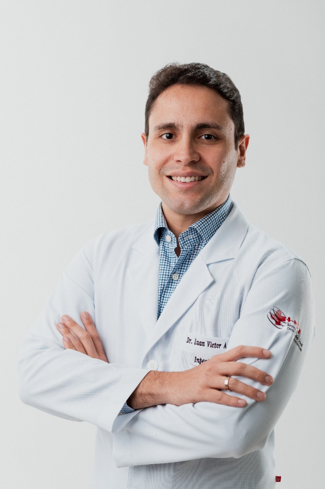

Cuidado minucioso, diagnóstico preciso e medicina baseada em evidências.
A infectologia é a ciência de investigar com rigor a história e os sintomas de cada paciente. Um atendimento acolhedor, humanizado e focado na resolução de quadros complexos, prevenção inteligente e promoção da saúde com total confidencialidade.

"Tratar a pessoa por trás dos sintomas, compreendendo toda a sua história clínica."
O infectologista é frequentemente procurado em momentos de incerteza: febres de difícil esclarecimento, infecções que retornam com frequência, diagnósticos complexos ou o receio diante de uma suspeita infecciosa. Meu compromisso é fornecer segurança científica, acolhimento integral e um espaço totalmente protegido de julgamentos.
Modalidades de Cuidado
Estrutura planejada para garantir conveniência, precisão diagnóstica e continuidade no acompanhamento.
Atendimento Presencial
Imunoclinic
Av. Pontes Vieira, 2340 (Edifício Medical UNO) - Sala 610 - Dionísio Torres, Fortaleza - CE.
Telemedicina
Consultas por videochamada para pacientes de todo o Brasil e exterior.
Parecer Hospitalar
Avaliação especializada em infectologia para pacientes internados, com emissão de parecer técnico e suporte à equipe médica assistente.
Acompanhamento Domiciliar
Visitas e acompanhamento clínico em domicílio para pacientes com dificuldade de deslocamento, garantindo continuidade do cuidado com segurança e conforto.
Principais Focos Clínicos
Acompanhamento integral, resolutivo e fundamentado nas evidências científicas mais atuais.
Febre de Origem Obscura & Casos Complexos
Investigação criteriosa de quadros febris persistentes sem diagnóstico definido, perda de peso involuntária e sintomas sistêmicos arrastados.
HIV, PrEP, PEP & Saúde Sexual
Acompanhamento moderno da infecção pelo HIV (indetectável = intransmissível), prescrição de Profilaxia Pré (PrEP) e Pós-Exposição (PEP), com sigilo absoluto.
Infecções Urinárias & de Repetição
Investigação para quem vivencia cistites de repetição, sinusites, pneumonias ou infecções de pele, quebrando o ciclo do uso constante de antibióticos.
Hepatites Virais (B e C)
Diagnóstico precoce, monitoramento de Hepatite B e tratamento com taxas de cura superiores a 95% para Hepatite C com modernos antivirais diretos.
Imunossuprimidos & Pós-Cirúrgico
Assistência especializada para pacientes em quimioterapia, transplantados, em uso de biológicos ou com infecções cirúrgicas e próteses.
Medicina do Viajante & Imunizações
Consulta pré-viagem completa para destinos endêmicos: febre amarela, malária, diarreia do viajante e orientação do calendário vacinal do adulto.
Dr. Luan Victor Almeida Lima
A Infectologia entrou na minha vida ainda durante a formação médica e, pouco a pouco, tornou-se muito mais do que uma escolha profissional. Foi na especialidade que descobri o quanto a medicina pode transformar histórias, acolher pessoas e fazer diferença em momentos importantes da vida.
Ao longo dos anos, tive o privilégio de acompanhar pacientes em diferentes fases — desde a prevenção e o cuidado com a saúde até o enfrentamento de doenças que exigem atenção, conhecimento e, sobretudo, escuta.
É isso que torna a Infectologia tão especial para mim: cada paciente chega com uma história única, e cuidar significa também conhecer essa história, compreender suas necessidades e construir, juntos, os melhores caminhos para a saúde.
Sou muito feliz por exercer a medicina dessa forma. Mais do que diagnosticar e tratar doenças, tenho a oportunidade de acompanhar pessoas, celebrar conquistas, estar presente nos momentos difíceis e participar de histórias que também transformam a minha própria trajetória.
Ser infectologista é, para mim, cuidar com conhecimento, mas também com presença, respeito e humanidade.
Trajetória Acadêmica e Profissional
Formação Acadêmica
Atuação Profissional & Liderança
Prêmios e Reconhecimentos Acadêmicos
Produção Científica e Acadêmica
Pesquisa ativa, publicações em periódicos de impacto e contribuição para o avanço da infectologia e do uso racional de antimicrobianos.
Publicações Científicas Selecionadas
Como Funciona a Sua Consulta
Conheça as etapas da nossa avaliação médica, pensadas para proporcionar clareza e tranquilidade desde o primeiro contato.
Escuta Atenta
Conversamos sem pressa sobre todo o histórico dos seus sintomas, hábitos, viagens e medicações já utilizadas.
Análise Rigorosa
Avaliamos todos os exames anteriores (culturas, sorologias, biópsias) e solicitamos investigações específicas, caso necessário.
Conduta Clara
Definimos o plano terapêutico individualizado, explicando cada medicação, duração exata e as melhores medidas de prevenção.
Acompanhamento
Você não fica sozinho após a consulta: monitoramos a resposta clínica e ajustamos o tratamento conforme a sua evolução.
Perguntas Frequentes
Respostas claras para as principais dúvidas sobre consultas e atendimentos em infectologia.
Elogios & Depoimentos de Pacientes
A satisfação, o acolhimento humano e a resolutividade dos atendimentos refletidos nas experiências reais de quem já consultou com o Dr. Luan Victor.
"Foi a consulta mais humana que tive na vida. Simplesmente amei!"
"Um profissional que vê o paciente além da sua sintomatologia, trazendo uma experiência acolhedora em seu consultório, com uma visão holística e humana que amplia ainda mais o tratamento."
"Médico excelente, podem confiar! Sempre atualizado, educado, resolutivo, acessível e amigo. Nunca encontrará nenhum médico melhor!"
"Estou sem palavras para descrever o tamanho da humildade e humanidade desse profissional. Muito atencioso e seguro, ótimo profissional!"
"Atencioso, passa muita confiança, pontualíssimo!"
"Um profissional de excelência!! Indico de olhos fechados."
Agende sua consulta
Dr. Luan Victor Almeida Lima.
Atendimentos na Imunoclinic
Edifício Medical UNO
Av. Pontes Vieira, 2340. Sala 610. Dionísio Torres, Fortaleza - CE.
Marcação de consultas: (85) 99968-9770.